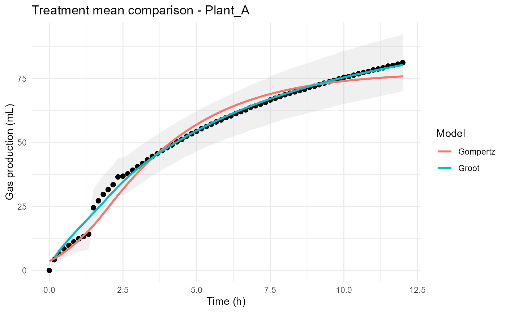

Compares observed and predicted treatment means across multiple fitted models for a selected treatment.
Details
The observed treatment mean is displayed as a black line with optional standard-error bands. Predicted treatment means from each fitted model are overlaid for visual comparison.
This visualization is useful for:
Comparing competing kinetic models
Evaluating treatment-level model performance
Assessing agreement between observations and predictions
Comparing fermentation dynamics among models
Examples
files <- example_data()
raw_data <- read_ankom(
files$ankom
)
metadata <- read_metadata(
files$metadata
)
gp <- process_ankom(
raw_data,
metadata,
headspace_ml = 210,
temperature_c = 39
)
groot_fit <- fit_groot(
gp
)
#> Warning: Large negative pressure values detected. Minimum PSI = -1.274 . Please inspect the affected bottles.
#> rumenGP data validation passed.
#> Observations: 1752
#> Heads: 24
#> Treatments: 5
gompertz_fit <- fit_gompertz(
gp
)
#> Warning: Large negative pressure values detected. Minimum PSI = -1.274 . Please inspect the affected bottles.
#> rumenGP data validation passed.
#> Observations: 1752
#> Heads: 24
#> Treatments: 5
plot_treatment_mean(
Groot = groot_fit,
Gompertz = gompertz_fit,
treatment = unique(
gp$Treatment
)[1]
)
